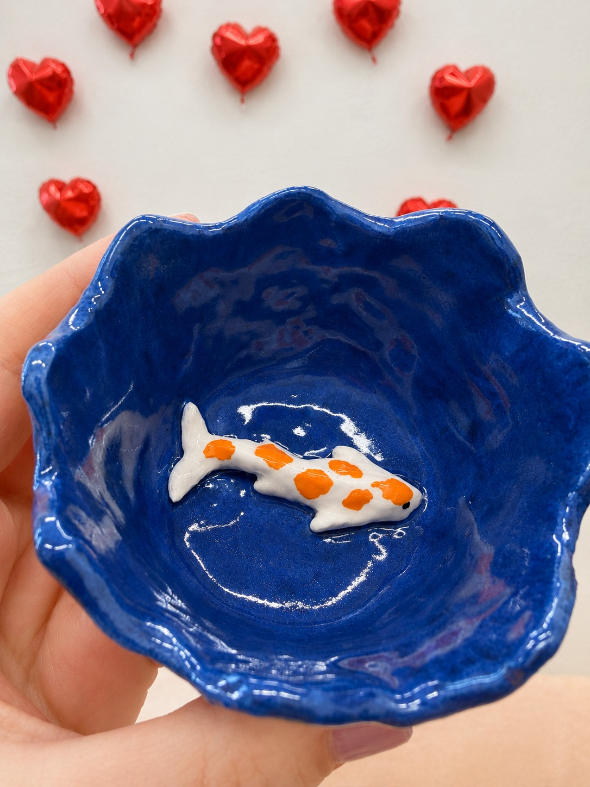
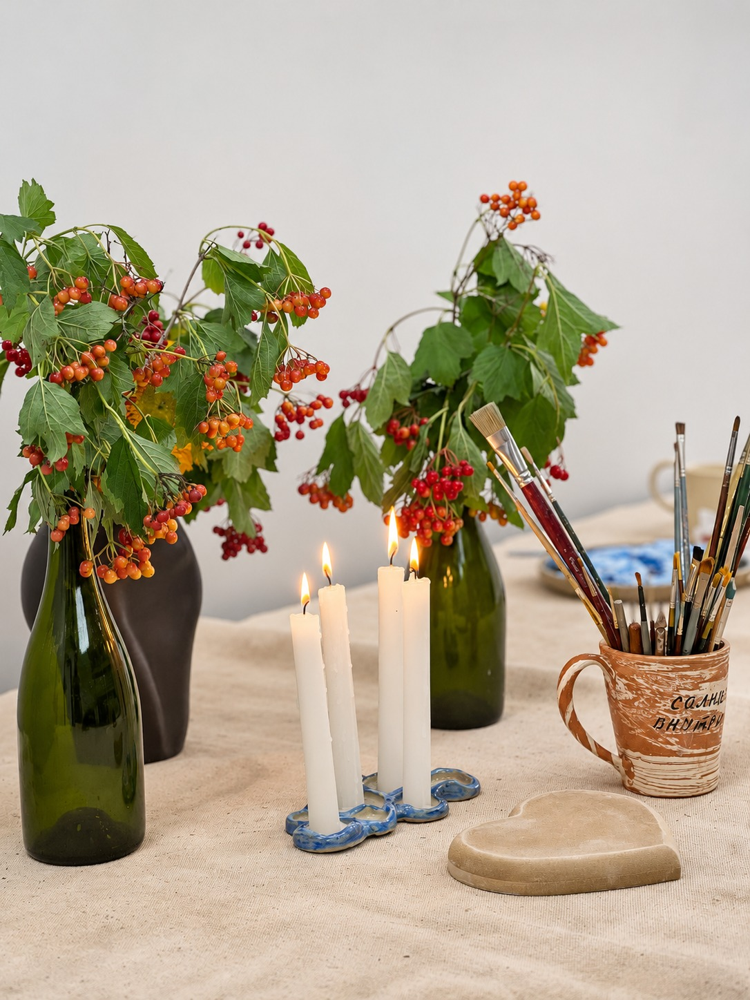
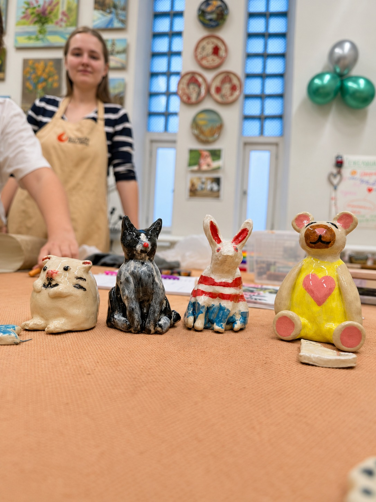
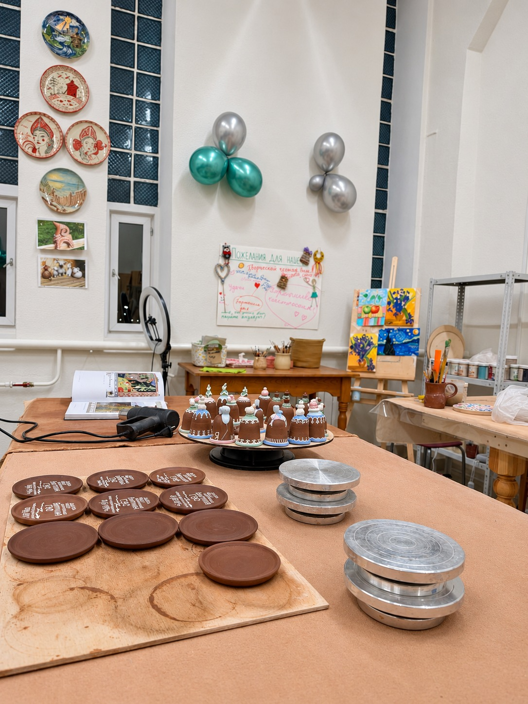

Посуда с характером
Чаша с неровным краем, тарелка с рыбкой или кружка для любимого чая. Всё начинается с вашей идеи.
Мастерская в Братске для тех, кто хочет замедлиться, познакомиться с глиной и создать свою особенную вещь.

Мастер-классы
Чашку для любимого чая, маленького друга или просто хорошее воспоминание.

Чаша с неровным краем, тарелка с рыбкой или кружка для любимого чая. Всё начинается с вашей идеи.

Кот, зайчик или кто-то совсем необычный. Идея для тех, кто любит придумывать истории.

Линии, пятна, любимые оттенки. Выберите роспись как направление для будущего занятия.
Направления для знакомства с керамикой. Доступные мастер-классы, возраст участников, стоимость и ближайшие даты уточняются у мастерской.
Наша мастерская
Глина запоминает прикосновения. Небольшую неровность края, след пальца, выбранный вами цвет. Из этих деталей и складывается вещь, которой больше ни у кого нет.
На фотографиях — наши работы и пространство, где они рождаются. Здесь рядом живут керамика, живопись и простое удовольствие делать что-то руками.
Заглянуть в мастерскую ↓Творчество и развитие
Работа с глиной — это творчество, терпение и маленькие открытия.
Родители, готовьте полки
для изделий из керамики!
Дети учатся переводить плоский рисунок в трёхмерный объект и знакомятся с симметрией, балансом и пропорциями.
Если что-то пошло не так, глину можно смять и начать заново. Это помогает не бояться пробовать снова.
Гончарное дело и ручная лепка требуют времени и фокуса. За работой с глиной можно замедлиться и сосредоточиться на одном процессе.
Работы из мастерской
Разные формы. Разные характеры. Настоящие работы из мастерской. Нажмите, чтобы рассмотреть ближе.
Перед первым занятием
Начните со знакомства с направлениями: ручная лепка посуды, фигурки или роспись керамики. О каждом из них можно узнать у мастерской.
Актуальное расписание и стоимость можно узнать у мастерской. Все контакты — в конце страницы.
Подходящий возраст участников, размер группы и возможность занятия с ребёнком или компанией уточните у мастерской.
Это зависит от изделия, сушки, обжига и покрытия. Точный порядок работы и срок готовности уточните перед занятием.